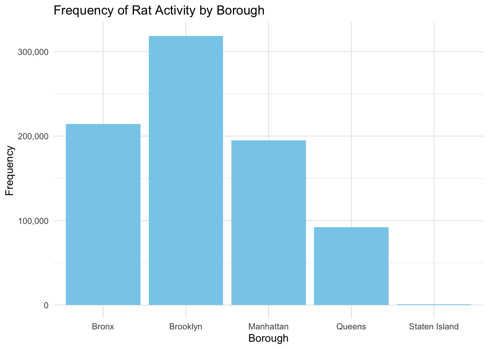
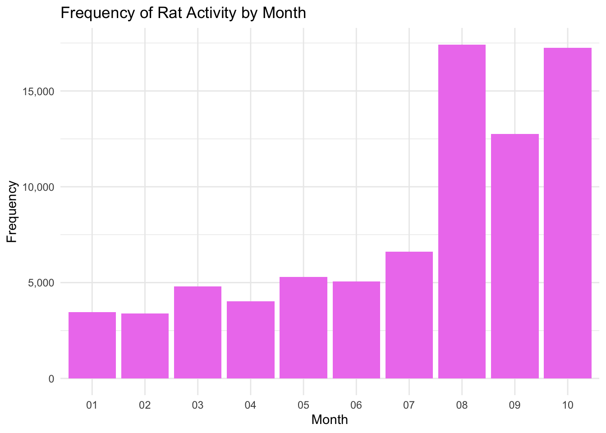
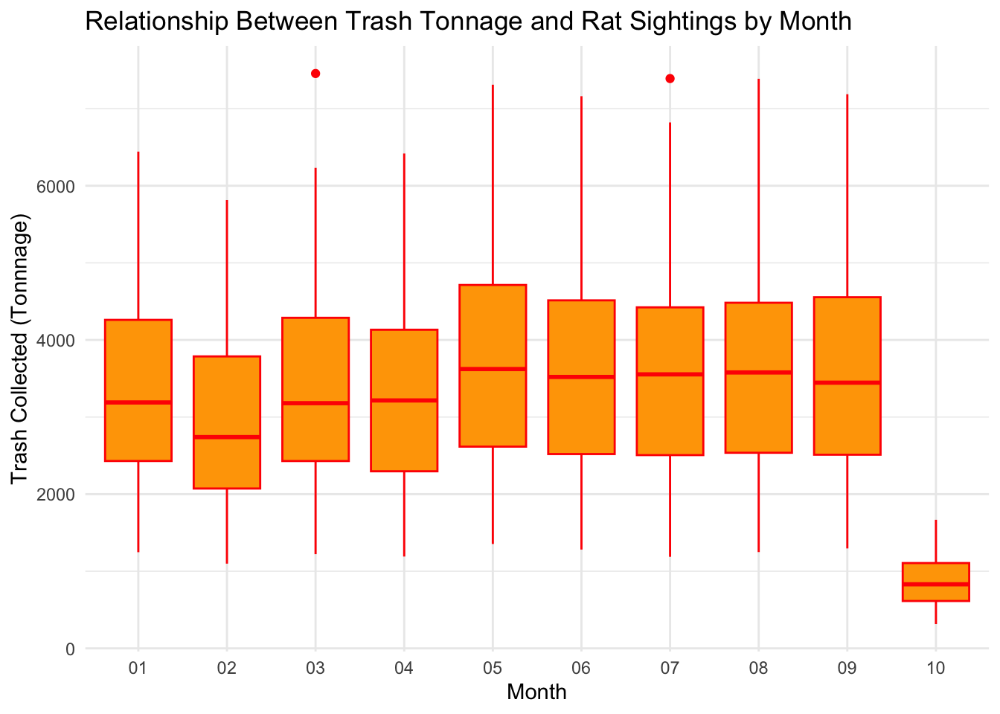

Questions: wynter quinn laylah
dsny_df <- read_csv("data/DSNY_Monthly_Tonnage_Data_20231108.csv") ## Rows: 23237 Columns: 11
## ── Column specification ────────────────────────────────────────────────────────
## Delimiter: ","
## chr (3): MONTH, BOROUGH, COMMUNITYDISTRICT
## dbl (8): REFUSETONSCOLLECTED, PAPERTONSCOLLECTED, MGPTONSCOLLECTED, RESORGAN...
##
## ℹ Use `spec()` to retrieve the full column specification for this data.
## ℹ Specify the column types or set `show_col_types = FALSE` to quiet this message.dsny_df =
dsny_df |>
janitor::clean_names() |>
separate(month, c("year", "month"), sep = " / ") |>
filter(year == "2023") |>
select(-communitydistrict, -resorganicstons, -schoolorganictons, -leavesorganictons, -xmastreetons)
rodent_inspec_df <- read_csv("data/Rodent Inspection Data - 2023.csv")## Rows: 17578 Columns: 25
## ── Column specification ────────────────────────────────────────────────────────
## Delimiter: ","
## chr (12): INSPECTION_TYPE, JOB_ID, BLOCK, LOT, HOUSE_NUMBER, STREET_NAME, BO...
## dbl (13): JOB_TICKET_OR_WORK_ORDER_ID, JOB_PROGRESS, BBL, BORO_CODE, ZIP_COD...
##
## ℹ Use `spec()` to retrieve the full column specification for this data.
## ℹ Specify the column types or set `show_col_types = FALSE` to quiet this message.rodent_inspec_df =
rodent_inspec_df |>
janitor::clean_names() |>
select(-job_id, -job_ticket_or_work_order_id, -job_progress, -bbl, -house_number, -street_name, -block, -lot, -approved_date, -location, -community_board, -council_district, -census_tract, -bin, -nta)
rodent_tidy =
rodent_inspec_df |>
mutate(inspection_date = parse_date_time(inspection_date, orders = "mdy HM"),
day = day(inspection_date),
month = sprintf("%02d", month(inspection_date)),
year = year(inspection_date),
hour = hour(inspection_date),
minute = minute(inspection_date)) |>
select(-day, -hour, -minute, -boro_code)
total_rat_df = merge(dsny_df, rodent_inspec_df)
rat_merge_df = merge(dsny_df, rodent_tidy)## bar graph
rat_table =
total_rat_df |>
data.frame(
borough = c("Manhattan", "Brooklyn", "Bronx", "Queens", "Staten Island"),
result = c("Passed", "Rat Activity", "Stoppage done", "Bait applied", "Cleanup done", "Failed for Other R", "Monitoring visit")
)
rat_activity_counts <- total_rat_df |>
filter(result == "Rat Activity") |>
group_by(borough) |>
summarise(count = n())
view(rat_activity_counts)
ggplot(rat_activity_counts, aes(x = borough, y = count)) +
geom_bar(stat = "identity", fill = "skyblue") +
labs(title = "Frequency of Rat Activity by Borough",
x = "Borough",
y = "Frequency") +
scale_y_continuous(labels = scales::comma_format(scale = 1e+0))
rat_activity_counts =
rat_merge_df |>
filter(result == "Rat Activity") |>
group_by(month) |>
summarise(count = n())
view(rat_activity_counts)
ggplot(rat_activity_counts, aes(x = month, y = count)) +
geom_bar(stat = "identity", fill = "violet") +
labs(title = "Frequency of Rat Activity by Month",
x = "Month",
y = "Frequency") +
scale_y_continuous(labels = scales::comma_format(scale = 1e+0))
rat_activity_counts =
rat_merge_df |>
filter(result == "Rat Activity") |>
group_by(month, refusetonscollected) |>
summarise(count = n())## `summarise()` has grouped output by 'month'. You can override using the
## `.groups` argument.view(rat_activity_counts)
ggplot(rat_activity_counts, aes(x = month, y = refusetonscollected, color = count)) +
geom_boxplot() +
labs(title = "Correlation between Trash Tonnage and Rat Sightings by Month",
x = "Trash Tonnage",
y = "Sighting") +
scale_y_continuous(labels = scales::comma_format(scale = 1e+0))## Warning: The following aesthetics were dropped during statistical transformation: colour
## ℹ This can happen when ggplot fails to infer the correct grouping structure in
## the data.
## ℹ Did you forget to specify a `group` aesthetic or to convert a numerical
## variable into a factor?
## Ask if we should add color to the plot